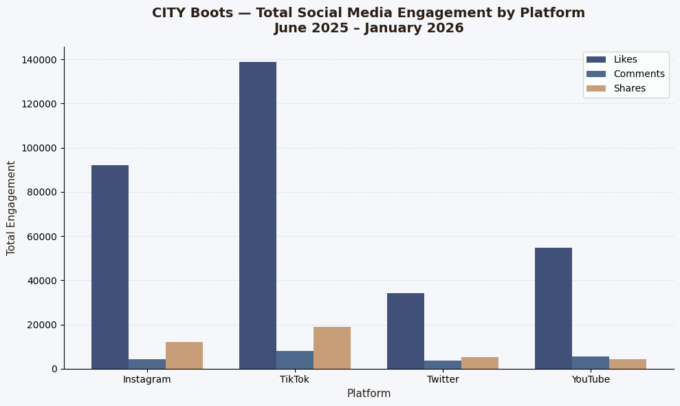

Lab Requirements
Choose two experiments from a provided menu. Experiment A focused on visual/design work — enhancing the portfolio with CSS animations, a refined color palette, and scroll-triggered transitions. Experiment B focused on data work — building a Python visualization from a real or realistic dataset using Matplotlib.
The "vibe coding" framing meant we were encouraged to use AI assistance and intuition to build — but also to reflect critically on where AI helped versus where it fell short.
Experiment A — CSS Animations & Editorial Redesign
I chose to focus Experiment A on the overall enhancement of my portfolio to reflect my personal style and goals. My first step was finding inspiration — compiling fonts, colors, animations, and transitions I was drawn to.
I used a completely new color palette: soft creams, navy blues, and warm brown. I imported Google Fonts — Playfair Display and Lora — which gave the portfolio a more editorial, professional feel compared to the default fonts.
The hardest and most rewarding part was the CSS animations: a page load
fade-in, scroll-triggered reveals, and hover transitions. I used AI to
help with the DOMContentLoaded event and the
IntersectionObserver API, which watches for elements
entering the viewport and triggers the CSS transition when they do.
IntersectionObserver is a browser API that watches whether an element is visible in the viewport. When a .reveal element scrolls into view, JavaScript adds the 'visible' class — which triggers the CSS opacity and transform transition.
What I Learned
AI was most helpful for the specific structure of
IntersectionObserver — syntax that's hard to guess without
prior experience. The challenge was that AI couldn't understand the
creative vision in my head. That gap actually motivated me to learn more
of the underlying code myself rather than rely entirely on generated output.
What This Demonstrates
Experiment A shows my ability to move beyond static CSS into dynamic, interactive design. The navy/cream color scheme, serif typography, and gold accents that run through this entire portfolio originated in this lab.
Experiment B — Python Visualization: CITY Boots
For Experiment B I created a Python visualization in Google Colab using a fake social media engagement dataset for CITY Boots — a brand I actually interned at during summer 2025. I used dates from June 2025 through January 2026 to reflect the time I was working there, making the data feel personal rather than generic.
The dataset was generated using numpy and pandas
across four platforms — Instagram, TikTok, Twitter, and YouTube — with
columns for Likes, Comments, and Shares. The code runs in three stages:
building the data with a nested loop, grouping it with
groupby(), then drawing both charts with
matplotlib.
Drawing the grouped bars was the hardest part. I couldn't figure out that
writing x - width, x, and
x + width was how to avoid stacking them on top of each
other. AI significantly sped up this process, but I would probably
comprehend the material more deeply without it as an immediate fallback.


What I Learned
Building this chart forced me to understand how Python structures data
for visualization — using groupby() to aggregate rows, and
how matplotlib needs explicit x-position offsets to draw side-by-side
bars. Using real internship data made the process more meaningful than
a textbook example would have.
Critical Reflection
Process Evaluation & Ethical Considerations
AI was most helpful for syntax I hadn't encountered before — specifically
the IntersectionObserver JavaScript and the grouped bar chart
positioning in Python. Both have very specific structures that are hard to
guess without prior experience.
AI lacks the ability to create aesthetically specific work that reflects a personal creative vision. This poses an ethical problem: if AI writes the harder parts of the code, what am I actually learning? I found myself in a tension between efficiency (get it working) and comprehension (understand why it works).
The most honest thing I can say about this lab: AI helped me produce outputs I couldn't have made alone yet — but it also revealed exactly which skills I still need to build for myself.
What This Demonstrates
Lab 5 is where the portfolio became something I was genuinely invested in aesthetically. The design system I built here — the color palette, the typography pairing, the scroll animations — carried forward into every page that came after it, including the one you're reading now.
Experiment B connects academic work to real professional experience in a way that felt authentic. The CITY Boots dataset wasn't arbitrary — it reflected an actual period of work, which made the Python scripting feel purposeful rather than just an exercise.